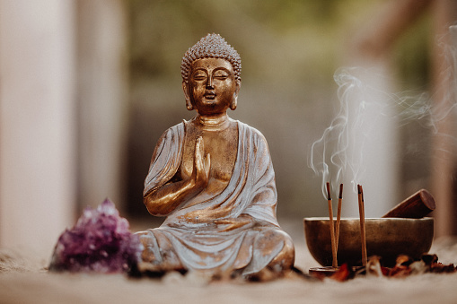
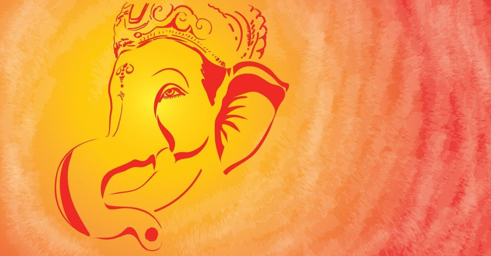
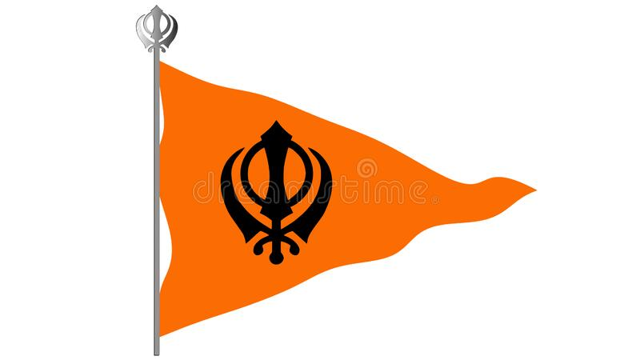

Culture of India
Indian culture is the heritage of social norms, ethical values, traditional customs, belief
systems,
political systems, artifacts and technologies that originated in or are associated with the
ethno-linguistically diverse Indian subcontinent. The term also applies beyond India to
countries
and cultures whose histories are strongly connected to India by immigration, colonization, or
influence, particularly in South Asia and Southeast Asia. India's languages, religions, dance,
music, architecture, food and customs differ from place to place within the country.
Indian culture, often labelled as a combination of several cultures, has been influenced by a
history that is several millennia old, beginning with the Indus Valley Civilization and other
early
cultural areas. Many elements of Indian culture, such as Indian religions, mathematics,
philosophy, cuisine, languages, dance, music and movies have had a profound impact across the
Indosphere, Greater India and the world. Specifically Southeast Asian and Himalayan influence on
early India, had lasting impacts on the formation of Hinduism and Indian mythology. Hinduism
itself
formed from various distinct folk religions, which merged during the Vedic period and following
periods. Especially Austroasiatic groups, such as early Munda and Mon Khmer, but also Tibetic
and
other Tibeto-Burmese groups, left noteworthy influence on local Indian peoples and culture.
Several
scholars, such as Professor Przyluski, Jules Bloch, and Lévi, among others, concluded that there
is
a significant cultural, linguistic, and political Mon-Khmer (Austroasiatic) influence on early
India, which can also be observed by Austroasiatic loanwords within Indo-Aryan languages and
rice
cultivation, which was introduced by East/Southeast Asian rice-agriculturalists using a route
from
Southeast Asia through Northeast India into the Indian subcontinent.India is considered the
birthplace of some of the world's major religions: Buddhism, Hinduism, Jainism and Sikhism.
Today, other religions such as Muslim and Christianity have worked their way into the population
as well, though Hinduism remains the most popular.
Religious Culture
Indian-origin religions Hinduism, Jainism, Buddhism, and Sikhism, are all based on the concepts of
dharma and karma. Ahimsa, the philosophy of nonviolence, is an important aspect of native Indian
faiths whose most well known proponent was Mahatma Gandhi, who used civil disobedience to unite
India during the Indian independence movement – this philosophy further inspired Martin Luther King
Jr. during the American civil rights movement. Foreign-origin religion, including Abrahamic
religions, such as Judaism, Christianity and Islam, are also present in India, as well as
Zoroastrianism and Baháʼí Faith[10][11] both escaping persecution by Islam have
also found shelter in India over the centuries.
India has 28 states and 8 union territories with different culture and it is the second most
populated country in the world. The Indian culture, often labeled as an amalgamation of several
various cultures, spans across the Indian subcontinent and has been influenced and shaped by a
history that is several thousand years old.Throughout the history of India, Indian culture
has been heavily influenced by Dharmic religions. Influence from East/Southeast Asian cultures
onto ancient India and early Hinduism, specifically Austroasiatic groups, such as early Munda and
Mon Khmer, but also Tibetic and other Tibeto-Burmese groups, had noteworthy impact on local Indian
peoples and cultures. Several scholars, such as Professor Przyluski, Jules Bloch, and Lévi, among
others, concluded that there is a significant cultural, linguistic, and political Mon-Khmer
(Austroasiatic) influence on early India, which can also be observed by Austroasiatic loanwords
within Indo-Aryan languages and rice cultivation, which was introduced by East/Southeast Asian
rice-agriculturalists using a route from Southeast Asia through Northeast India into the Indian
subcontinent.They have been credited with shaping much of Indian philosophy, literature,
architecture, art and music.Greater India was the historical extent of Indian culture beyond
the Indian subcontinent. This particularly concerns the spread of Hinduism, Buddhism, architecture,
administration and writing system from India to other parts of Asia through the Silk Road by the
travelers and maritime traders during the early centuries of the Common Era.[20][21] To the west,
Greater India overlaps with Greater Persia in the Hindu Kush and Pamir Mountains.[22] Over the
centuries, there has been a significant fusion of cultures between Buddhists, Hindus, Muslims,
Jains, Sikhs and various tribal populations in India.
India is the birthplace of Hinduism, Buddhism, Jainism, Sikhism, and other religions. They are
collectively known as Indian religions. Indian religions are a major form of world religions
along with Abrahamic ones. Today, Hinduism and Buddhism are the world's third and fourth-largest
religions respectively, with over 2 billion followers altogether,and possibly as many
as 2.5 or 2.6 billion followers.Followers of Indian religions – Hindus, Sikhs, Jains and
Buddhists make up around 80–82% population of India.
India is one of the most religiously and ethnically diverse nations in the world, with some of the
most deeply religious societies and cultures. Religion plays a central and definitive role in the
life of many of its people. Although India is a secular Hindu-majority country, it has a large
Muslim population. Except for Jammu and Kashmir, Punjab, Meghalaya, Nagaland, Mizoram and
Lakshadweep, Hindus form the predominant population in all 27 states and 9 union territories.
Muslims are present throughout India, with large populations in Uttar Pradesh, Bihar, Maharashtra,
Kerala, Telangana, Andhra Pradesh, West Bengal and Assam; while only Jammu and Kashmir and
Lakshadweep have majority Muslim populations. Sikhs and Christians are other significant minorities
of India.



India is one of the most religiously and ethnically diverse nations in the world, with some of
the most deeply religious societies and cultures. Religion plays a central and definitive role
in the life of many of its people. Although India is a secular Hindu-majority country, it has a
large Muslim population. Except for Jammu and Kashmir, Punjab, Meghalaya, Nagaland, Mizoram and
Lakshadweep, Hindus form the predominant population in all 27 states and 9 union territories.
Muslims are present throughout India, with large populations in Uttar Pradesh, Bihar,
Maharashtra, Kerala, Telangana, Andhra Pradesh, West Bengal and Assam; while only Jammu and
Kashmir and Lakshadweep have majority Muslim populations. Sikhs and Christians are other
significant minorities of India.
Because of the diversity of religious groups in India, there has been a history of turmoil and
violence between them. India has been a theatre for violent religious clashes between members of
different religions such as Hindus, Christians, Muslims, and Sikhs.[30] Several groups have
founded various national-religious political parties, and in spite of government policies
minority religious groups are being subjected to prejudice from more dominant groups in order to
maintain and control resources in particular regions of India.[30]
According to the 2011 census, 79.8% of the population of India practice Hinduism. Islam (14.2%),
Christianity (2.3%), Sikhism (1.7%), Buddhism (0.7%) and Jainism (0.4%) are the other major
religions followed by the people of India.[31] Many tribal religions, such as Sarnaism, are
found in India, though these have been affected by major religions such as Hinduism, Buddhism,
Islam and Christianity.[32] Jainism, Zoroastrianism, Judaism, and the Baháʼí Faith are also
influential but their numbers are smaller.[32] Atheism and agnostics also have visible influence
in India, along with a self-ascribed tolerance to other faiths.[32] According to a study
conducted by the Pew Research Centre, India will have world's largest populations of Hindus and
Muslims by 2050. India is expected to have about 311 million Muslims making up around 19–20% of
the population and yet about 1.3 billion Hindus are projected to live in India comprising around
76% of the population.
Atheism and agnosticism have a long history in India and flourished within Śramaṇa movement. The
Cārvāka school originated in India around the 6th century BCE.[33][34] It is one of the earliest
form of materialistic and atheistic movement in ancient India.[35][36] Sramana, Buddhism,
Jainism, Ājīvika and some schools of Hinduism consider atheism to be valid and reject the
concept of creator deity, ritualism and superstitions.[37][38][39] India has produced some
notable atheist politicians and social reformers.[40] According to the 2012 WIN-Gallup Global
Index of Religion and Atheism report, 81% of Indians were religious, 13% were not religious, 3%
were convinced atheists, and 3% were unsure or did not respond